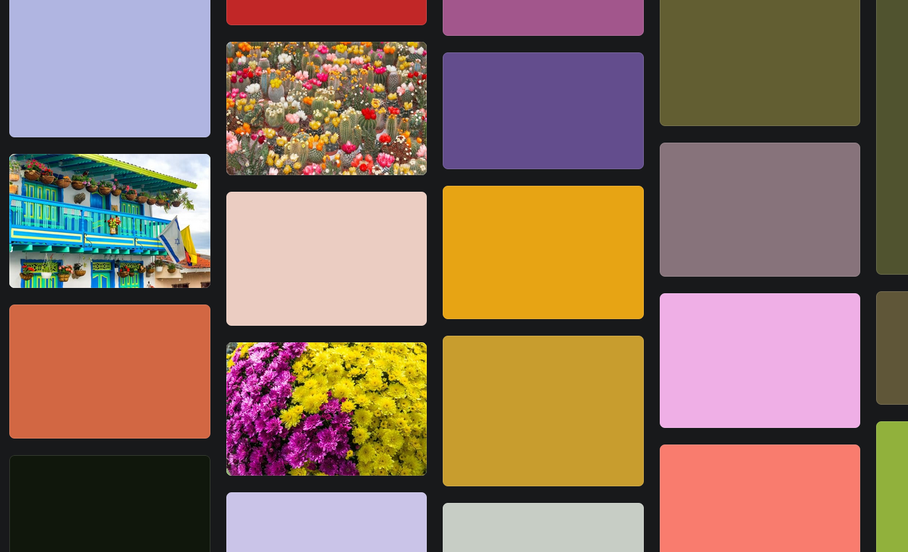
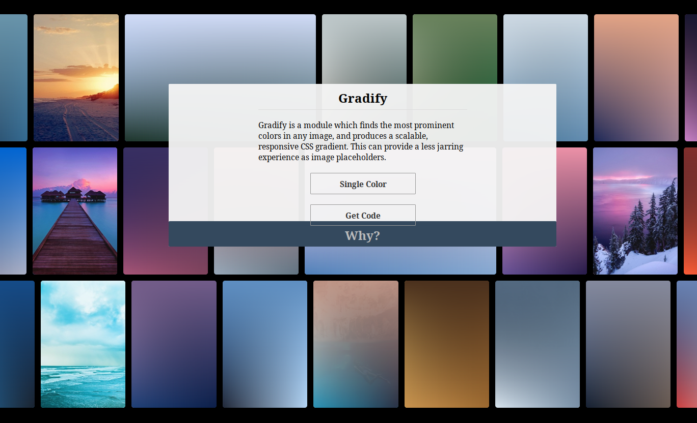
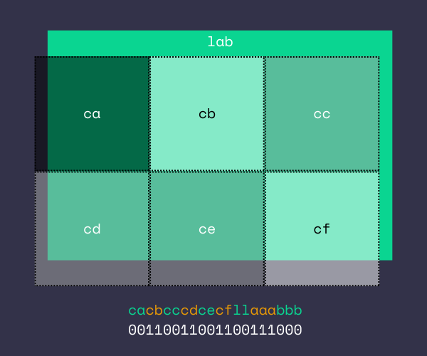
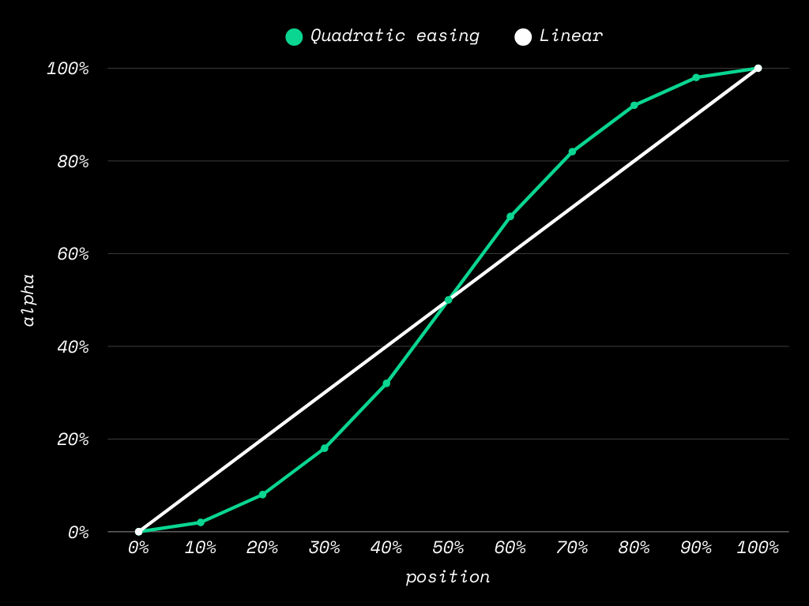
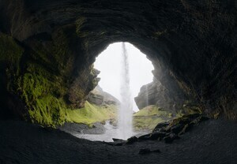

Here’s a CSS technique that produces blurry image placeholders (LQIPs) without cluttering up your markup — Only a single custom property needed!
<img src="…" style="--lqip:192900">
The custom property above gives you this image:
Granted, it’s a very blurry placeholder especially in contrast to other leading solutions. But the point is that it’s minimal and non-invasive! No need for wrapper elements or attributes with long strings of data, or JavaScript at all.
Note for RSS readers / ‘Reader’ mode clients: This post makes heavy use of CSS-based images. Your client may not support it.
Example images
Toggle images
Check out the LQIP gallery for examples!
Survey of LQIP approaches
There have been many different techniques to implement LQIPs (low quality image placeholders), such as a very low
resolution WebP or JPEG (beheaded JPEGs even), optimised SVG shape placements (SQIP), and directly applying a discrete cosine
transform (BlurHash). Don’t forget good old progressive JPEGs and interlaced
PNGs!

Canva and Pinterest use solid colour placeholders.
At the other end of the spectrum, we have low tech solutions such as a simple solid fill of the image’s average colour.
Pure inline CSS solutions have the advantage rendering immediately — even a background-image: url(…a data URL) would be fine!

Gradify generates linear-gradients
that very roughly approximate the full image.
The big disadvantage of pure CSS approaches is that you typically litter your markup with lengthy inline styles or obnoxious data URLs. My handcoded site with no build step would be extra incompatible with this approach!
<!-- typical gradify css -->
<img width="200" height="150" style="
background: linear-gradient(45deg, #f4a261, transparent),
linear-gradient(-45deg, #e76f51, transparent),
linear-gradient(90deg, #8ab17d, transparent),
linear-gradient(0deg, #d62828, #023047);
">
BlurHash is a solution that minimises markup by compressing image
data into a
short base-83 string, but decoding and rendering that data requires additional JS…
<!-- a blurhash markup -->
<img width="200" height="150" src="…"
data-blurhash="LEHV6nWB2yk8pyo0adR*.7kCMdnj">
BlurHash example
Is it possible to decode a blur hash in CSS instead?
Decoding in pure CSS
Unlike BlurHash, we can’t use a string encoding because there are very few if any string manipulation
functions in CSS (2025), so strings are out.
In the end, I came up with my own hash / encoding, and the integer type was the best vessel for it.
The usual way to encode stuff in a single integer is by bit packing, where you pack multiple numbers in an integer as bits. Amazingly, we can unpack them in pure CSS!
To unpack bits, all you need is bit shifting and bit masking. Bit shifting can be done by division and floor operations — calc(x / y) and round(down,n) — and bit masking via the modulo function mod(a,b).
* {
/* Example packed int: */
/* 0b11_00_001_101 */
--packed-int: 781;
--bits-9-10: mod(round(down, calc(var(--packed-int) / 256)), 4); /* 3 */
--bits-7-8: mod(round(down, calc(var(--packed-int) / 64)), 4); /* 0 */
--bits-4-6: mod(round(down, calc(var(--packed-int) / 8)), 8); /* 1 */
--bits-0-3: mod(var(--packed-int), 8); /* 5 */
}
Of course, we could also use pow(2,n) instead of hardcoded powers of two.
So, a single CSS integer value was going to be the encoding of the “hash” of my CSS-only blobhash
(that’s what I’m calling it now). But how much information can we pack in a single CSS int?
Side quest: Limits of CSS values
The spec doesn’t say anything about the allowed range for int values, leaving the fate of my shenanigans to browser vendors.
From my experiments, apparently you can only use integers from -999,999 up to 999,999 in custom
properties before you lose precision. Just beyond that limit, we start getting values rounded to tens —
1,234,567 becomes 1,234,560. Which is weird (precision is counted in decimal places!?), but I
bet it’s due to historical, Internet Explorer-esque reasons.
Anyway, within the range of [-999999, 999999] there are 1,999,999 values. This meant that with a
single integer hash, almost two million LQIP configurations could be described. To make calculation
easier, I reduced it to the nearest power of two down which is 220.
220 = 1,048,576 < 1,999,999 < 2,097,152 = 221
In short, I had 20 bits of information to encode the CSS-based LQIP hash.
Why is it called a “hash”? Because it’s a mapping from an any-size data to a fixed-size
value. In this case, there are an infinite number of images of arbitrary sizes, but only 1,999,999 possible hash
values.
The Scheme
With only 20 bits, the LQIP image must be a very simplified version of the full image. I ended up with this scheme:
a single base colour + 6 brightness components, to be overlaid on top of the base colour in a 3×2 grid. A
rather extreme version of chroma
subsampling.

This totals 9 numbers to pack into the 20-bit integer:
The base colour is encoded in the lower 8 bits in the Oklab colour space. 2 bits for luminance, and 3 bits for each of the a and b coordinates. I’ve found Oklab to give subjectively balanced results, but RGB should work just as well.
The 6 greyscale components are encoded in the higher 12 bits — 2 bits each.
An offline script was created to compress any given image into this integer format. The script was quite simple: Get the average
or dominant colour — there are a lot of libraries that can do that — then resize the image down to
3×2 pixels and get the greyscale values. Here’s my script.
I even tried a genetic algorithm to optimise the LQIP bits, but the fitness function was hard to establish. Ultimately, I would’ve needed an offline CSS renderer for this to work accurately. Maybe a future iteration could use some headless Chrome solution to automatically compare real renderings of the LQIP against the source image.
Once encoded, it’s set as the value of --lqip via the style attribute in the target element. It could then be decoded in CSS. Here’s the actual code I used for decoding:
[style*="--lqip:"] {
--lqip-ca: mod(round(down, calc((var(--lqip) + pow(2, 19)) / pow(2, 18))), 4);
--lqip-cb: mod(round(down, calc((var(--lqip) + pow(2, 19)) / pow(2, 16))), 4);
--lqip-cc: mod(round(down, calc((var(--lqip) + pow(2, 19)) / pow(2, 14))), 4);
--lqip-cd: mod(round(down, calc((var(--lqip) + pow(2, 19)) / pow(2, 12))), 4);
--lqip-ce: mod(round(down, calc((var(--lqip) + pow(2, 19)) / pow(2, 10))), 4);
--lqip-cf: mod(round(down, calc((var(--lqip) + pow(2, 19)) / pow(2, 8))), 4);
--lqip-ll: mod(round(down, calc((var(--lqip) + pow(2, 19)) / pow(2, 6))), 4);
--lqip-aaa: mod(round(down, calc((var(--lqip) + pow(2, 19)) / pow(2, 3))), 8);
--lqip-bbb: mod(calc(var(--lqip) + pow(2, 19)), 8);
Before rendering the decoded values, the raw number data values need to be converted to CSS colours. It’s fairly
straightforward, just a bunch linear interpolations into colour constructor functions.
/* continued */
--lqip-ca-clr: hsl(0 0% calc(var(--lqip-ca) / 3 * 60% + 20%));
--lqip-cb-clr: hsl(0 0% calc(var(--lqip-cb) / 3 * 60% + 20%));
--lqip-cc-clr: hsl(0 0% calc(var(--lqip-cc) / 3 * 60% + 20%));
--lqip-cd-clr: hsl(0 0% calc(var(--lqip-cd) / 3 * 60% + 20%));
--lqip-ce-clr: hsl(0 0% calc(var(--lqip-ce) / 3 * 60% + 20%));
--lqip-cf-clr: hsl(0 0% calc(var(--lqip-cf) / 3 * 60% + 20%));
--lqip-base-clr: oklab(
calc(var(--lqip-ll) / 3 * 0.6 + 0.2)
calc(var(--lqip-aaa) / 8 * 0.7 - 0.35)
calc((var(--lqip-bbb) + 1) / 8 * 0.7 - 0.35)
);
}
Time for another demo!
You can see here how each component variable maps to the LQIP image. E.g. the cb value corresponds to
the relative brightness of the top middle area. Fun fact: The above preview content is implemented in pure
CSS!
Rendering it all
Finally, rendering the LQIP. I used multiple radial gradients to render the greyscale components,
and a flat base colour at the bottom.
[style*="--lqip:"] {
background-image:
radial-gradient(50% 75% at 16.67% 25%, var(--lqip-ca-clr), transparent),
radial-gradient(50% 75% at 50% 25%, var(--lqip-cb-clr), transparent),
radial-gradient(50% 75% at 83.33% 25%, var(--lqip-cc-clr), transparent),
radial-gradient(50% 75% at 16.67% 75%, var(--lqip-cd-clr), transparent),
radial-gradient(50% 75% at 50% 75%, var(--lqip-ce-clr), transparent),
radial-gradient(50% 75% at 83.33% 75%, var(--lqip-cf-clr), transparent),
linear-gradient(0deg, var(--lqip-base-clr), var(--lqip-base-clr));
}
The above is a simplified version of the full renderer for illustrative purposes. The real one has smooth gradient falloffs and blend modes.
As you might expect, the radial gradients are arranged in a 3×2 grid. You can see it in this interactive deconstructor view!
LQIP deconstructor!
These radial gradients are the core of the CSS-based LQIP. The position and radius of the gradients are an important detail that would determine how well these can approximate real images. Besides that, another requirement is that these individual radial gradients must be seamless when combined together.
I implemented smooth gradient falloffs to make the final result look seamless. It took special care to make the gradients extra smooth, so let’s dive into it…
Bilinear interpolation approximation with radial gradients
Radial gradients use linear interpolation by default. Interpolation refers to how it maps the in-between colours from the start colour to the end colour. And linear interpolation, the most basic interpolation, well…
CSS radial-gradients with linear interpolation
It doesn’t look good. It gives us these hard edges (highlighted above). You could almost see the elliptical edges of each radial gradient and their centers.
In real raster images, we’d use bilinear interpolation at the very least when scaling up low resolution images. Bicubic interpolation is even better.
One way to simulate the smoothness of bilinear interpolation in an array of CSS radial-gradients is to use ‘quadratic easing’ to control the gradation of opacity.
This means the opacity falloff of the gradient would be smoother around the center and the edges. Each gradient would get feathered edges, smoothening the overall composite image.
CSS radial-gradients:
Quadratic interpolation (touch to see edges)
CSS radial-gradients:
Linear interpolation (touch to see edges)
Image: Bilinear interpolation
Image: Bicubic interpolation
Image: Your browser’s native interpolation
Image: No interpolation
However, CSS gradients don’t support nonlinear interpolation of opacity yet as of writing (not to be confused with colour space interpolation, which browsers do support!). The solution for now is to add more points in the gradient to get a smooth opacity curve based on the quadratic formula.
radial-gradient(
<position>,
rgb(82 190 204 / 100%) 0%,
rgb(82 190 204 / 98%) 10%,
rgb(82 190 204 / 92%) 20%,
rgb(82 190 204 / 82%) 30%,
rgb(82 190 204 / 68%) 40%,
rgb(82 190 204 / 32%) 60%,
rgb(82 190 204 / 18%) 70%,
rgb(82 190 204 / 8%) 80%,
rgb(82 190 204 / 2%) 90%,
transparent 100%
)

The quadratic interpolation is based on two quadratic curves (parabolas), one for each half of the gradient — one upward and another downward.
The quadratic easing blends adjacent radial gradients together, mimicking the smooth bilinear (or even bicubic) interpolation. It’s almost like a fake blur filter, thus achieving the ‘blur’ part of this BlurHash alternative.
Check out the gallery for a direct comparison to BlurHash.

Toggle images
Appendix: Alternatives considered
Four colours instead of monochromatic preview
Four 5-bit colours, where each R is 2 bits, G is 2 bits, and B is just a zero or one.
The four colours would map to the four corners of the image box, rendered as radial gradients
This was my first attempt, and I fiddled with this for a while, but mixing four colours properly require proper bilinear interpolation and probably a shader. Just layering gradients resulted in muddiness (just like mixing too many watercolour pigments), and there was no CSS blend mode that could fix it. So I abandoned it, and moved on to a monochromatic approach.
Single solid colour
This was what I used on this website before. It’s simple and effective. A clean-markup approach could still use the custom --lqip variable:
<img src="…" style="--lqip:#9bc28e">
<style>
/* we save some bytes by ‘aliasing’ this property */
* { background-color: var(--lqip) }
</style>
HTML attribute instead of CSS custom property
We can use HTML attributes to control CSS soon! Here’s what the LQIP markup would look like in the future:
<img src="…" lqip="192900">
Waiting for attr() Level 5 for this one. It’s nicer and shorter, fewer weird punctuations in markup (who came up with the double dash for CSS vars anyway?). The value can then be referenced in CSS with attr(lqip type(<number>)) instead of var(--lqip).
For extra safety, a data- prefix could be added to the attribute name.
Can’t wait for this to get widespread adoption. I also want it for my TAC components.